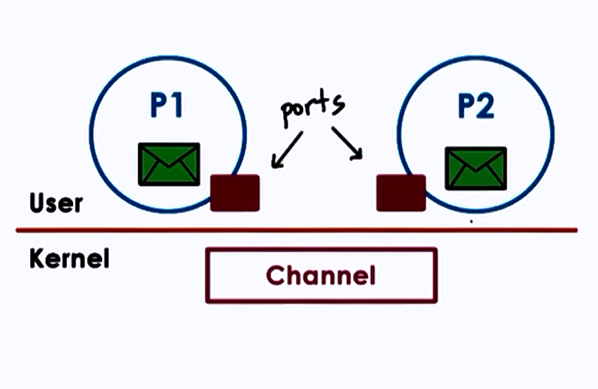
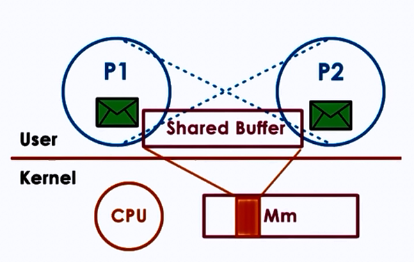

Inter Process Communication
- Processes share memory
- data in shared messages
- Processes exchange messages
- message passing via sockets
- Requires synchronization
- mutex, waiting
Inter Process Communication(IPC) is an OS supported mechanism for interaction among processes (coordination and communication)
- Message Passing
- e.g. sockets, pips, msgs, queues
- Memory based IPC
- shared memory, memory mapped files
- Higher level semantics
- files, RPC
- Synchronization primitives
Message Passing
- Send/Receive messages
- OS creates and maintains a channel
- buffer, FIFO queue
- OS provides interfaces to processes
- a port
- processes send/write messages to this port
- processes receive/read messages from this port

- Kernel required to
- establish communication
- perform each IPC operation
- send: system call + data copy
- receive: system call + data copy
- Request-response:
4x user/ kernel crossings +
4x data copies
Advantages
- simplicity : kernel does channel management and synchronization
Disadvantages
- Overheads
Forms of Message Passing IPC
1. Pipes
- Carry byte stream between 2 process
- e.g connect output from 1 process to input of another

2. Message queues
- Carry "messages" among processes
- OS management includes priorities, scheduling of message delivery
- APIs : Sys-V and POSIX

3. Sockets
- send() and recv() : pass message buffers
- socket() : create kernel level socket buffer
- associated neccessary kernel processing (TCP-IP,..)
- If different machines, channel between processes and network devices
- If same machine, bypass full protocol stack

Shared Memory IPC
- read and write to shared memory region
- OS establishes shared channel between the processes
- physical pages mapped into virtual address space
- VA(P1) and VA(P2) map to same physical address
- VA(P1) != VA(P2)
- physical mempry doesn't need to be contiguous
- APIs : SysV, POSIX, memory mapped files, Android ashmem

Advantages
- System calls only for setup data copies potentially reduced (but not eliminated)
Disdvantages
- explicit synchronization
- communication protocol, shared buffer management
- programmer's responsibility
Which is better?
Overheads for 1. Message Passing : must perform multiple copies 2. Shared Memory : must establish all mappings among processes' address space and shared memory pages
Thus, it depends.
Copy vs Map
Goal for both is to transfer data from one into target saddress space
| Copy (Message Passing) | Map (Shared Memory) |
|---|---|
| CPU cycles to copy data to/from port | CPU cycles to map memory into address space |
| CPU to copy data to channel | |
| If channel setup once, use many times (good payoff) | |
| Can perform well for 1 time use |
- Large Data: t(Copy) >> t(Map)
- e.g. tradeoff exercised in Window "Local" Procedure Calls (LPC)
Shared Memory and Synchronization
Use threads accessing shared state in a single addressing space, but for process
Synchronization method:
- mechanism supported by processing threading library (pthreads)
- OS supported IPC for sync
Either method must coordinate
- no of concurrent access to shared segment
- when data is available and ready for consumption
IPC Synchronization
| Message Queues | Semaphores |
|---|---|
| Implement "mutual exclusion" via send/receive | OS supported synchronization construct |
| binary construct (either allow process or not) | |
| Like mutex, if value = 0, stop; if value = 1, decrement(lock) and proceed |